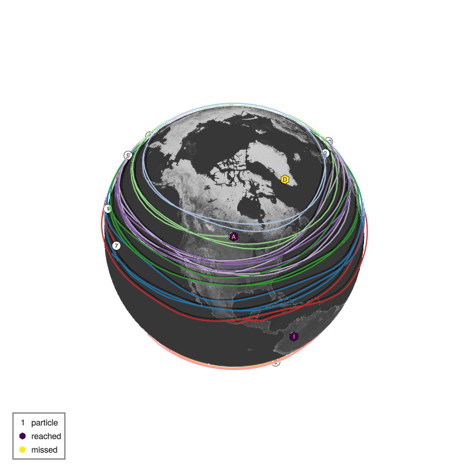

List of submissions
It follows the code and plot of the trajectories of all TravellingSailorProblem submissions to /submissions sorted in alphabetical order of the filename.
Alex's particles: thank you for watching
path: /submissions/particlesarebest.jl
rank: 1. of 16 submissions
name = "Alex's particles"
description = "thank you for watching"
nchildren = 26 # [1, 26]
layer = 1 # [1, 8], 1 is top layer, 8 is surface layer
# single locations (lon, lat) in degrees ˚E, ˚N
departures = [(95.56635, 54.81705), (354.74258, -14.803077), (56.26401, -7.863072), (50.18398, 52.950596), (114.91832, -2.9943857), (338.43423, -53.678158), (111.88009, 3.6321588), (18.876785, -30.943626), (226.55255, 3.219464), (185.019, 43.05622), (200.57825, 28.930468), (129.66591, 22.373398), (136.49515, 18.444519), (212.12823, -24.59992), (160.23268, -62.83254), (282.9707, 46.214905), (318.0169, -37.00316), (126.19383, 71.48746), (250.63539, -17.337187), (275.80426, 18.99485), (6.0340905, 53.94345), (55.15946, -0.39385226), (145.12454, -15.872939), (191.21777, 23.59317), (237.21051, -12.414563), (15.733151, 23.145866)]
Evaluation:
Destination 1 Ana ( -97.1˚E, 49.9˚N) reached by particle 16: 56019 points
Destination 2 Babu ( 115.0˚E, -8.7˚N) reached by particle 2: 21096 points
Destination 3 Carla ( 73.5˚E, -4.6˚N) reached by particle 3: 18464 points
Destination 4 Diego ( -51.7˚E, 64.2˚N) reached by particle 21: 93655 points
Destination 5 Elif ( 121.0˚E, 14.6˚N) reached by particle 5: 30392 points
Destination 6 Felipe ( -70.7˚E, -53.2˚N) reached by particle 6: 97461 points
Destination 7 Gael ( 106.8˚E, 10.8˚N) reached by particle 7: 11363 points
Destination 8 Haruko ( 18.5˚E, -33.9˚N) missed by particle 14: -1951 points
Destination 9 Isla ( -74.1˚E, 4.7˚N) missed by particle 9: -3066 points
Destination 10 Jose ( -1.3˚E, 51.8˚N) reached by particle 10: 133353 points
Destination 11 Karim ( 139.7˚E, 35.7˚N) reached by particle 11: 101354 points
Destination 12 Lola (-157.8˚E, 21.3˚N) missed by particle 13: -1357 points
Destination 13 Maeve ( -96.7˚E, 17.1˚N) reached by particle 13: 56431 points
Destination 14 Noah ( 115.9˚E, -31.9˚N) reached by particle 14: 102059 points
Destination 15 Omar ( 166.7˚E, -77.8˚N) reached by particle 15: 32898 points
Destination 16 Priya ( 106.9˚E, 47.9˚N) missed by particle 16: -1114 points
Destination 17 Quirin ( 151.2˚E, -33.9˚N) reached by particle 8: 13361 points
Destination 18 Rasmus ( 15.6˚E, 78.2˚N) reached by particle 18: 25807 points
Destination 19 Saanvi (-169.9˚E, -21.2˚N) reached by particle 19: 72715 points
Destination 20 Tomas ( -61.5˚E, 10.5˚N) reached by particle 20: 43281 points
Destination 21 Uma ( 158.7˚E, 53.0˚N) missed by particle 4: -1403 points
Destination 22 Vera ( 15.3˚E, 4.4˚N) missed by particle 13: -12430 points
Destination 23 Walter ( -5.9˚E, -15.9˚N) reached by particle 23: 24467 points
Destination 24 Xia ( 85.3˚E, 27.7˚N) reached by particle 24: 103086 points
Destination 25 Yuki ( -47.9˚E, -15.8˚N) reached by particle 25: 8709 points
Destination 26 Zara ( -7.6˚E, 33.6˚N) reached by particle 26: 109477 points
Evaluation: 20/26 reached, 1134127 points
abrabant: some starting positions
path: /submissions/abrabs.jl
rank: 2. of 16 submissions
name = "abrabant"
description = "some starting positions"
layer = 8
nchildren = 26
departures = [(35.642608642578125, 43.11244201660156),
(147.23934936523438, -10.617977142333984),
(90.5309066772461, -2.2264163494110107),
(60.19046401977539, 54.50503158569336),
(125.3673324584961, 23.77134132385254),
(64.08698272705078, -62.996498107910156),
(71.428466796875, 22.89366340637207),
(279.3690490722656, -27.041275024414062),
(282.6518249511719, 5.053019046783447),
(186.62347412109375, 33.35563278198242),
(79.01980590820312, 18.9736385345459),
(113.73995208740234, 72.75370788574219),
(16.53545379638672, 68.93758392333984),
(345.7623596191406, -30.077959060668945),
(147.3675994873047, -51.43952941894531),
(321.36578369140625, 75.19052124023438),
(40.451683044433594, -46.65412902832031),
(306.3640441894531, 62.89625930786133),
(128.457763671875, -47.34185028076172),
(310.8349304199219, 6.460821628570557),
(73.28694152832031, 15.31255054473877),
(1.1661815643310547, 8.427781105041504),
(265.4789123535156, -37.45340347290039),
(4.537074565887451, 37.212852478027344),
(284.34368896484375, -8.00273323059082),
(309.05657958984375, 35.081363677978516)]
Evaluation:
Destination 1 Ana ( -97.1˚E, 49.9˚N) reached by particle 1: 36342 points
Destination 2 Babu ( 115.0˚E, -8.7˚N) missed by particle 2: -4524 points
Destination 3 Carla ( 73.5˚E, -4.6˚N) reached by particle 3: 8446 points
Destination 4 Diego ( -51.7˚E, 64.2˚N) reached by particle 4: 42119 points
Destination 5 Elif ( 121.0˚E, 14.6˚N) reached by particle 5: 8199 points
Destination 6 Felipe ( -70.7˚E, -53.2˚N) missed by particle 6: -6146 points
Destination 7 Gael ( 106.8˚E, 10.8˚N) reached by particle 7: 24494 points
Destination 8 Haruko ( 18.5˚E, -33.9˚N) reached by particle 8: 23745 points
Destination 9 Isla ( -74.1˚E, 4.7˚N) missed by particle 9: -1164 points
Destination 10 Jose ( -1.3˚E, 51.8˚N) missed by particle 10: -3139 points
Destination 11 Karim ( 139.7˚E, 35.7˚N) reached by particle 11: 12700 points
Destination 12 Lola (-157.8˚E, 21.3˚N) missed by particle 12: -2139 points
Destination 13 Maeve ( -96.7˚E, 17.1˚N) reached by particle 13: 50454 points
Destination 14 Noah ( 115.9˚E, -31.9˚N) reached by particle 17: 19525 points
Destination 15 Omar ( 166.7˚E, -77.8˚N) reached by particle 15: 16955 points
Destination 16 Priya ( 106.9˚E, 47.9˚N) reached by particle 16: 17536 points
Destination 17 Quirin ( 151.2˚E, -33.9˚N) missed by particle 14: -4779 points
Destination 18 Rasmus ( 15.6˚E, 78.2˚N) reached by particle 18: 32646 points
Destination 19 Saanvi (-169.9˚E, -21.2˚N) missed by particle 19: -5884 points
Destination 20 Tomas ( -61.5˚E, 10.5˚N) reached by particle 20: 17748 points
Destination 21 Uma ( 158.7˚E, 53.0˚N) reached by particle 21: 20832 points
Destination 22 Vera ( 15.3˚E, 4.4˚N) reached by particle 22: 8901 points
Destination 23 Walter ( -5.9˚E, -15.9˚N) missed by particle 23: -2183 points
Destination 24 Xia ( 85.3˚E, 27.7˚N) missed by particle 7: -7075 points
Destination 25 Yuki ( -47.9˚E, -15.8˚N) reached by particle 25: 11961 points
Destination 26 Zara ( -7.6˚E, 33.6˚N) reached by particle 26: 11439 points
Evaluation: 17/26 reached, 327009 points
TT Warriors: 20 runs, 80 particles, all children, keep the best score.
path: /submissions/tt_warriors.jl
rank: 3. of 16 submissions
name = "TT Warriors"
description = "20 runs, 80 particles, all children, keep the best score."
nchildren = 26
layer = 8
departures = [(61.96025, 29.194416), (131.60475, -8.302025), (98.850815, 4.838798), (75.045654, 33.45283), (171.09457, 19.093496), (89.073524, -38.819103), (119.583755, 17.453188), (238.06699, -44.35182), (293.19272, 3.7793906), (99.106445, 20.497173), (359.4216, 15.3762455), (178.25343, 54.252335), (137.67677, 46.43853), (358.56573, -19.618576), (148.87408, -42.208652), (43.864998, 30.87156), (122.84378, -61.47772), (35.986427, 57.923096), (132.05795, -35.576412), (331.1195, 12.528936), (294.4705, 51.211033), (353.02036, 5.42586), (312.34494, -22.421572), (70.861755, 30.039198), (245.31715, -10.120822), (311.49902, 32.695606)]
Evaluation:
Destination 1 Ana ( -97.1˚E, 49.9˚N) reached by particle 1: 39902 points
Destination 2 Babu ( 115.0˚E, -8.7˚N) reached by particle 2: 8922 points
Destination 3 Carla ( 73.5˚E, -4.6˚N) missed by particle 3: -1695 points
Destination 4 Diego ( -51.7˚E, 64.2˚N) reached by particle 4: 44337 points
Destination 5 Elif ( 121.0˚E, 14.6˚N) missed by particle 7: -1311 points
Destination 6 Felipe ( -70.7˚E, -53.2˚N) missed by particle 15: -5058 points
Destination 7 Gael ( 106.8˚E, 10.8˚N) missed by particle 7: -1377 points
Destination 8 Haruko ( 18.5˚E, -33.9˚N) reached by particle 8: 29772 points
Destination 9 Isla ( -74.1˚E, 4.7˚N) missed by particle 9: -2472 points
Destination 10 Jose ( -1.3˚E, 51.8˚N) missed by particle 21: -6684 points
Destination 11 Karim ( 139.7˚E, 35.7˚N) missed by particle 12: -9491 points
Destination 12 Lola (-157.8˚E, 21.3˚N) missed by particle 12: -1018 points
Destination 13 Maeve ( -96.7˚E, 17.1˚N) reached by particle 13: 46037 points
Destination 14 Noah ( 115.9˚E, -31.9˚N) missed by particle 14: -1133 points
Destination 15 Omar ( 166.7˚E, -77.8˚N) missed by particle 15: -7948 points
Destination 16 Priya ( 106.9˚E, 47.9˚N) missed by particle 16: -3746 points
Destination 17 Quirin ( 151.2˚E, -33.9˚N) reached by particle 17: 22993 points
Destination 18 Rasmus ( 15.6˚E, 78.2˚N) reached by particle 21: 24689 points
Destination 19 Saanvi (-169.9˚E, -21.2˚N) reached by particle 19: 11577 points
Destination 20 Tomas ( -61.5˚E, 10.5˚N) reached by particle 20: 20159 points
Destination 21 Uma ( 158.7˚E, 53.0˚N) missed by particle 18: -1835 points
Destination 22 Vera ( 15.3˚E, 4.4˚N) missed by particle 22: -1069 points
Destination 23 Walter ( -5.9˚E, -15.9˚N) reached by particle 23: 16491 points
Destination 24 Xia ( 85.3˚E, 27.7˚N) reached by particle 24: 2620 points
Destination 25 Yuki ( -47.9˚E, -15.8˚N) missed by particle 23: -2203 points
Destination 26 Zara ( -7.6˚E, 33.6˚N) missed by particle 26: -1186 points
Evaluation: 11/26 reached, 219273 points
Andrew Watford: Monte Carlo
path: /submissions/andrewwatford.jl
rank: 4. of 16 submissions
name = "Andrew Watford"
description = "Monte Carlo"
nchildren = 26
layer = 8
departures = [
(256.1797, 48.801758),
(119.41016, -8.313232),
(80.166016, -6.28833),
(222.91797, 36.791016),
(124.458984, 16.611328),
(141.39844, -56.4209),
(121.11328, 18.868652),
(282.23438, -17.444824),
(316.375, 4.812622),
(352.64844, 51.597656),
(123.55469, 29.529297),
(200.01953, 22.077637),
(259.89844, 42.66992),
(84.26172, -27.564453),
(210.08203, -84.22656),
(357.6875, 55.30957),
(138.78516, -34.60254),
(0.0, 0.0),
(134.60938, -33.87207),
(292.3203, 13.291992),
(123.60547, 56.353516),
(0.0, 0.0),
(341.03125, -15.414795),
(73.265625, 29.234375),
(0.0, 0.0),
(2.3447876, 29.351562),
]
Evaluation:
Destination 1 Ana ( -97.1˚E, 49.9˚N) reached by particle 1: 889 points
Destination 2 Babu ( 115.0˚E, -8.7˚N) reached by particle 2: 1110 points
Destination 3 Carla ( 73.5˚E, -4.6˚N) missed by particle 3: -1421 points
Destination 4 Diego ( -51.7˚E, 64.2˚N) reached by particle 4: 16791 points
Destination 5 Elif ( 121.0˚E, 14.6˚N) reached by particle 5: 1909 points
Destination 6 Felipe ( -70.7˚E, -53.2˚N) missed by particle 6: -1465 points
Destination 7 Gael ( 106.8˚E, 10.8˚N) missed by particle 7: -1209 points
Destination 8 Haruko ( 18.5˚E, -33.9˚N) missed by particle 8: -2102 points
Destination 9 Isla ( -74.1˚E, 4.7˚N) missed by particle 9: -1875 points
Destination 10 Jose ( -1.3˚E, 51.8˚N) reached by particle 10: 771 points
Destination 11 Karim ( 139.7˚E, 35.7˚N) reached by particle 11: 3544 points
Destination 12 Lola (-157.8˚E, 21.3˚N) reached by particle 12: 327 points
Destination 13 Maeve ( -96.7˚E, 17.1˚N) reached by particle 13: 17509 points
Destination 14 Noah ( 115.9˚E, -31.9˚N) reached by particle 14: 5987 points
Destination 15 Omar ( 166.7˚E, -77.8˚N) reached by particle 15: 1779 points
Destination 16 Priya ( 106.9˚E, 47.9˚N) reached by particle 16: 18085 points
Destination 17 Quirin ( 151.2˚E, -33.9˚N) reached by particle 17: 2171 points
Destination 18 Rasmus ( 15.6˚E, 78.2˚N) missed by particle 16: -24560 points
Destination 19 Saanvi (-169.9˚E, -21.2˚N) reached by particle 19: 14465 points
Destination 20 Tomas ( -61.5˚E, 10.5˚N) reached by particle 20: 7862 points
Destination 21 Uma ( 158.7˚E, 53.0˚N) reached by particle 21: 5938 points
Destination 22 Vera ( 15.3˚E, 4.4˚N) missed by particle 18: -4979 points
Destination 23 Walter ( -5.9˚E, -15.9˚N) reached by particle 23: 4231 points
Destination 24 Xia ( 85.3˚E, 27.7˚N) reached by particle 24: 2365 points
Destination 25 Yuki ( -47.9˚E, -15.8˚N) missed by particle 8: -10906 points
Destination 26 Zara ( -7.6˚E, 33.6˚N) reached by particle 26: 7714 points
Evaluation: 18/26 reached, 64930 points
Luke's simple cheaty method: Simple lon-5 with some edge case management. Reaches all children but with minimal distance travelled.
path: /submissions/luke_simple.jl
rank: 5. of 16 submissions
name = "Luke's simple cheaty method"
description = "Simple lon-5 with some edge case management. Reaches all children but with minimal distance travelled."
nchildren = 26 # [1, 26]
layer = 2 # [1, 8], 1 is top layer, 8 is surface layer
children = TravellingSailorProblem.children(nchildren)
departures = [
let (lon, lat) = children[i].lonlat
# compute both lon and lat depending on i
newlon, newlat =
i == 1 ? (lon + 5, lat) : # case for child 1
i == 3 ? (lon - 5, lat + 1) : # case for child 3 (example: -5 lon, +3 lat)
i == 9 ? (lon - 5, lat - 2) : # Isla
i == 16 ? (lon - 7, lat + 0.1) : # Priya should be hitting?
i == 20 ? (lon - 5, lat - 2.5) : # Tomas
i == 22 ? (lon + 5, lat) :
i == 23 ? (lon - 5, lat + 1) : # Walter
(lon - 5, lat) # default (all others)
(newlon, newlat)
end
for i in eachindex(children)
]Evaluation:
Destination 1 Ana ( -97.1˚E, 49.9˚N) reached by particle 1: 29490 points
Destination 2 Babu ( 115.0˚E, -8.7˚N) reached by particle 2: 681 points
Destination 3 Carla ( 73.5˚E, -4.6˚N) reached by particle 3: 672 points
Destination 4 Diego ( -51.7˚E, 64.2˚N) reached by particle 4: 311 points
Destination 5 Elif ( 121.0˚E, 14.6˚N) reached by particle 5: 652 points
Destination 6 Felipe ( -70.7˚E, -53.2˚N) reached by particle 6: 511 points
Destination 7 Gael ( 106.8˚E, 10.8˚N) reached by particle 7: 695 points
Destination 8 Haruko ( 18.5˚E, -33.9˚N) reached by particle 8: 516 points
Destination 9 Isla ( -74.1˚E, 4.7˚N) reached by particle 9: 1386 points
Destination 10 Jose ( -1.3˚E, 51.8˚N) reached by particle 10: 524 points
Destination 11 Karim ( 139.7˚E, 35.7˚N) reached by particle 11: 536 points
Destination 12 Lola (-157.8˚E, 21.3˚N) reached by particle 12: 555 points
Destination 13 Maeve ( -96.7˚E, 17.1˚N) reached by particle 13: 662 points
Destination 14 Noah ( 115.9˚E, -31.9˚N) reached by particle 14: 486 points
Destination 15 Omar ( 166.7˚E, -77.8˚N) reached by particle 15: 57 points
Destination 16 Priya ( 106.9˚E, 47.9˚N) reached by particle 16: 620 points
Destination 17 Quirin ( 151.2˚E, -33.9˚N) reached by particle 17: 515 points
Destination 18 Rasmus ( 15.6˚E, 78.2˚N) reached by particle 18: 66 points
Destination 19 Saanvi (-169.9˚E, -21.2˚N) reached by particle 19: 558 points
Destination 20 Tomas ( -61.5˚E, 10.5˚N) reached by particle 20: 686 points
Destination 21 Uma ( 158.7˚E, 53.0˚N) reached by particle 21: 506 points
Destination 22 Vera ( 15.3˚E, 4.4˚N) reached by particle 22: 636 points
Destination 23 Walter ( -5.9˚E, -15.9˚N) reached by particle 23: 702 points
Destination 24 Xia ( 85.3˚E, 27.7˚N) reached by particle 24: 606 points
Destination 25 Yuki ( -47.9˚E, -15.8˚N) reached by particle 25: 537 points
Destination 26 Zara ( -7.6˚E, 33.6˚N) reached by particle 26: 493 points
Evaluation: 26/26 reached, 43659 points
Jack Sparrow: All 26 random
path: /submissions/all_random.jl
rank: 6. of 16 submissions
name = "Jack Sparrow"
description = "All 26 random"
nchildren = 26 # [1, 26]
layer = 7 # [1, 8], 1 is top layer, 8 is surface layer
# 26 random locations (lon, lat) in degrees ˚E, ˚N
departures = [
(322.34, 62.20),
(100.16, -51.68),
( 44.30, -27.89),
(105.32, -19.22),
(354.02, 68.25),
( 79.60, 28.18),
( 21.45, 37.36),
(270.17, 47.94),
( 99.39, 20.99),
(186.29, -55.38),
(270.93, -2.89),
(346.22, -65.58),
(272.65, 32.82),
(174.54, -51.99),
(358.22, -32.65),
( 73.29, 27.31),
( 35.74, 67.60),
(356.70, 45.61),
(238.86, -10.03),
( 94.67, -19.18),
( 94.02, -46.96),
(256.61, 24.72),
( 39.68, 34.94),
( 87.61, 9.33),
( 77.99, -26.93),
(292.05, 40.39),
]Evaluation:
Destination 1 Ana ( -97.1˚E, 49.9˚N) missed by particle 18: -1570 points
Destination 2 Babu ( 115.0˚E, -8.7˚N) missed by particle 20: -1363 points
Destination 3 Carla ( 73.5˚E, -4.6˚N) missed by particle 24: -17621 points
Destination 4 Diego ( -51.7˚E, 64.2˚N) reached by particle 6: 33927 points
Destination 5 Elif ( 121.0˚E, 14.6˚N) missed by particle 24: -2912 points
Destination 6 Felipe ( -70.7˚E, -53.2˚N) reached by particle 3: 40385 points
Destination 7 Gael ( 106.8˚E, 10.8˚N) missed by particle 24: -3128 points
Destination 8 Haruko ( 18.5˚E, -33.9˚N) missed by particle 14: -2751 points
Destination 9 Isla ( -74.1˚E, 4.7˚N) missed by particle 11: -8885 points
Destination 10 Jose ( -1.3˚E, 51.8˚N) reached by particle 8: 67096 points
Destination 11 Karim ( 139.7˚E, 35.7˚N) reached by particle 23: 17322 points
Destination 12 Lola (-157.8˚E, 21.3˚N) missed by particle 13: -8817 points
Destination 13 Maeve ( -96.7˚E, 17.1˚N) missed by particle 22: -9400 points
Destination 14 Noah ( 115.9˚E, -31.9˚N) missed by particle 25: -2381 points
Destination 15 Omar ( 166.7˚E, -77.8˚N) missed by particle 21: -1205 points
Destination 16 Priya ( 106.9˚E, 47.9˚N) missed by particle 1: -1940 points
Destination 17 Quirin ( 151.2˚E, -33.9˚N) missed by particle 25: -1253 points
Destination 18 Rasmus ( 15.6˚E, 78.2˚N) missed by particle 5: -2984 points
Destination 19 Saanvi (-169.9˚E, -21.2˚N) missed by particle 25: -7388 points
Destination 20 Tomas ( -61.5˚E, 10.5˚N) missed by particle 1: -12895 points
Destination 21 Uma ( 158.7˚E, 53.0˚N) reached by particle 17: 11494 points
Destination 22 Vera ( 15.3˚E, 4.4˚N) missed by particle 11: -27595 points
Destination 23 Walter ( -5.9˚E, -15.9˚N) missed by particle 11: -3449 points
Destination 24 Xia ( 85.3˚E, 27.7˚N) missed by particle 6: -2173 points
Destination 25 Yuki ( -47.9˚E, -15.8˚N) missed by particle 11: -5815 points
Destination 26 Zara ( -7.6˚E, 33.6˚N) missed by particle 18: -10645 points
Evaluation: 5/26 reached, 34054 pointsAndrew Watford: Monte Carlo
path: /submissions/andrewwatford2.jl
rank: 7. of 16 submissions
name = "Andrew Watford"
description = "Monte Carlo"
nchildren = 26
layer = 8
departures = [
(257.21875, 48.015625),
(118.853516, -8.167725),
(83.53711, -4.6992188),
(290.25, 64.296875),
(118.85547, 13.503174),
(279.8672, -52.963867),
(104.08594, 8.439941),
(15.289795, -34.93457),
(272.96875, 5.878784),
(353.5078, 51.92285),
(134.25781, 36.932617),
(198.88672, 22.251953),
(258.04688, 16.027832),
(109.24219, -32.867188),
(175.82422, -80.34766),
(95.11328, 48.73828),
(147.55469, -34.43457),
(4.8237305, 82.134766),
(185.20703, -21.038086),
(300.22656, 11.098633),
(153.67969, 54.27539),
(9.0979, 4.0549316),
(348.47656, -19.072266),
(68.521484, 32.347656),
(307.03906, -16.908203),
(345.59375, 35.686523),
]
Evaluation:
Destination 1 Ana ( -97.1˚E, 49.9˚N) reached by particle 1: 830 points
Destination 2 Babu ( 115.0˚E, -8.7˚N) reached by particle 2: 988 points
Destination 3 Carla ( 73.5˚E, -4.6˚N) reached by particle 3: 2262 points
Destination 4 Diego ( -51.7˚E, 64.2˚N) reached by particle 4: 1697 points
Destination 5 Elif ( 121.0˚E, 14.6˚N) reached by particle 5: 467 points
Destination 6 Felipe ( -70.7˚E, -53.2˚N) reached by particle 6: 1111 points
Destination 7 Gael ( 106.8˚E, 10.8˚N) reached by particle 7: 627 points
Destination 8 Haruko ( 18.5˚E, -33.9˚N) reached by particle 8: 511 points
Destination 9 Isla ( -74.1˚E, 4.7˚N) reached by particle 9: 3260 points
Destination 10 Jose ( -1.3˚E, 51.8˚N) reached by particle 10: 615 points
Destination 11 Karim ( 139.7˚E, 35.7˚N) reached by particle 11: 890 points
Destination 12 Lola (-157.8˚E, 21.3˚N) reached by particle 12: 630 points
Destination 13 Maeve ( -96.7˚E, 17.1˚N) reached by particle 13: 943 points
Destination 14 Noah ( 115.9˚E, -31.9˚N) reached by particle 14: 1182 points
Destination 15 Omar ( 166.7˚E, -77.8˚N) reached by particle 15: 648 points
Destination 16 Priya ( 106.9˚E, 47.9˚N) reached by particle 16: 1563 points
Destination 17 Quirin ( 151.2˚E, -33.9˚N) reached by particle 17: 607 points
Destination 18 Rasmus ( 15.6˚E, 78.2˚N) reached by particle 18: 814 points
Destination 19 Saanvi (-169.9˚E, -21.2˚N) reached by particle 19: 892 points
Destination 20 Tomas ( -61.5˚E, 10.5˚N) reached by particle 20: 373 points
Destination 21 Uma ( 158.7˚E, 53.0˚N) reached by particle 21: 693 points
Destination 22 Vera ( 15.3˚E, 4.4˚N) reached by particle 22: 1205 points
Destination 23 Walter ( -5.9˚E, -15.9˚N) reached by particle 23: 1348 points
Destination 24 Xia ( 85.3˚E, 27.7˚N) reached by particle 24: 3162 points
Destination 25 Yuki ( -47.9˚E, -15.8˚N) reached by particle 25: 1048 points
Destination 26 Zara ( -7.6˚E, 33.6˚N) reached by particle 26: 1111 points
Evaluation: 26/26 reached, 29477 points
Mary Read: Mostly random
path: /submissions/MaryRead.jl
rank: 8. of 16 submissions
name = "Mary Read"
description = "Mostly random"
nchildren = 26 # number of children and particles
layer = 8 # vertical layer
departures = [
(335.31, 62.94), # (lon, lat) in degrees, particle 1
(338.78, -38.89), # particle 2
(5.10, 48.81), # etc
(60.51, 33.41),
(130.37, 17.89),
(-76.3,4.3),
(236.45,19.53),
(59.11, -8.34),
(16.45, 61.33),
(21.74, 1.02),
(111.53, 8.40),
(180.09, -36.32),
(51.23, -32.79),
(189.09, -21.91),
(349.20, -41.11),
(38.97, 19.00),
(150.09, 27.06),
(108.80, 31.54),
(66.25, -31.44),
(204.49, -84.98),
(212.04, 13.16),
(163.29, 67.06),
(329.87, 26.02),
(318.73, -25.26),
(218.22, 29.01)
]
Evaluation:
Destination 1 Ana ( -97.1˚E, 49.9˚N) reached by particle 9: 36859 points
Destination 2 Babu ( 115.0˚E, -8.7˚N) missed by particle 11: -19369 points
Destination 3 Carla ( 73.5˚E, -4.6˚N) missed by particle 5: -12110 points
Destination 4 Diego ( -51.7˚E, 64.2˚N) missed by particle 1: -1657 points
Destination 5 Elif ( 121.0˚E, 14.6˚N) missed by particle 5: -2488 points
Destination 6 Felipe ( -70.7˚E, -53.2˚N) missed by particle 15: -4418 points
Destination 7 Gael ( 106.8˚E, 10.8˚N) reached by particle 11: 1369 points
Destination 8 Haruko ( 18.5˚E, -33.9˚N) missed by particle 24: -1329 points
Destination 9 Isla ( -74.1˚E, 4.7˚N) missed by particle 6: -1446 points
Destination 10 Jose ( -1.3˚E, 51.8˚N) missed by particle 7: -1308 points
Destination 11 Karim ( 139.7˚E, 35.7˚N) reached by particle 18: 10952 points
Destination 12 Lola (-157.8˚E, 21.3˚N) reached by particle 21: 8947 points
Destination 13 Maeve ( -96.7˚E, 17.1˚N) missed by particle 7: -6180 points
Destination 14 Noah ( 115.9˚E, -31.9˚N) reached by particle 19: 9738 points
Destination 15 Omar ( 166.7˚E, -77.8˚N) reached by particle 20: 1898 points
Destination 16 Priya ( 106.9˚E, 47.9˚N) missed by particle 3: -4941 points
Destination 17 Quirin ( 151.2˚E, -33.9˚N) reached by particle 13: 28385 points
Destination 18 Rasmus ( 15.6˚E, 78.2˚N) missed by particle 7: -1107 points
Destination 19 Saanvi (-169.9˚E, -21.2˚N) reached by particle 14: 137 points
Destination 20 Tomas ( -61.5˚E, 10.5˚N) missed by particle 6: -3212 points
Destination 21 Uma ( 158.7˚E, 53.0˚N) missed by particle 9: -2374 points
Destination 22 Vera ( 15.3˚E, 4.4˚N) reached by particle 8: 12956 points
Destination 23 Walter ( -5.9˚E, -15.9˚N) missed by particle 24: -13307 points
Destination 24 Xia ( 85.3˚E, 27.7˚N) reached by particle 4: 4859 points
Destination 25 Yuki ( -47.9˚E, -15.8˚N) missed by particle 24: -12576 points
Destination 26 Zara ( -7.6˚E, 33.6˚N) missed by particle 23: -7344 points
Evaluation: 10/26 reached, 20934 points
Peter Pan: Westerlies
path: /submissions/westerlies.jl
rank: 9. of 16 submissions
name = "Peter Pan"
description = "Westerlies"
nchildren = 5 # [1, 26]
layer = 5 # [1, 8], 1 is top layer, 8 is surface layer
# optional parameter: number format
NF = Float64
# Locations (lon, lat) in degrees ˚E, ˚N of the first 10 children
departures = [
( -97.1, 49.9),
( 115.0, -8.7),
( 73.5, -4.6),
( -51.7, 64.2),
( 121.0, 14.6),
]
# move all 5 degrees west
for i in eachindex(departures)
lon, lat = departures[i]
departures[i] = (lon - 5, lat)
end
Evaluation:
Destination 1 Ana ( -97.1˚E, 49.9˚N) reached by particle 1: 582 points
Destination 2 Babu ( 115.0˚E, -8.7˚N) reached by particle 2: 952 points
Destination 3 Carla ( 73.5˚E, -4.6˚N) missed by particle 3: -1536 points
Destination 4 Diego ( -51.7˚E, 64.2˚N) reached by particle 4: 353 points
Destination 5 Elif ( 121.0˚E, 14.6˚N) reached by particle 5: 742 points
Evaluation: 4/5 reached, 1093 points
Blackbeard: Way too close!
path: /submissions/superclose.jl
rank: 10. of 16 submissions
name = "Blackbeard"
description = "Way too close!"
nchildren = 10 # [1, 26]
layer = 1 # [1, 8], 1 is top layer, 8 is surface layer
# Locations (lon, lat) in degrees ˚E, ˚N of the first 10 children
departures = [
( -97.1, 49.9),
( 115.0, -8.7),
( 73.5, -4.6),
( -51.7, 64.2),
( 121.0, 14.6),
( -70.7, -53.2),
( 106.8, 10.8),
( 18.5, -33.9),
( -74.1, 4.7),
( -1.3, 51.8),
]Evaluation:
Destination 1 Ana ( -97.1˚E, 49.9˚N) reached by particle 1: 0 points
Destination 2 Babu ( 115.0˚E, -8.7˚N) reached by particle 2: 0 points
Destination 3 Carla ( 73.5˚E, -4.6˚N) reached by particle 3: 0 points
Destination 4 Diego ( -51.7˚E, 64.2˚N) reached by particle 4: 0 points
Destination 5 Elif ( 121.0˚E, 14.6˚N) reached by particle 5: 0 points
Destination 6 Felipe ( -70.7˚E, -53.2˚N) reached by particle 6: 0 points
Destination 7 Gael ( 106.8˚E, 10.8˚N) reached by particle 7: 0 points
Destination 8 Haruko ( 18.5˚E, -33.9˚N) reached by particle 8: 0 points
Destination 9 Isla ( -74.1˚E, 4.7˚N) reached by particle 9: 0 points
Destination 10 Jose ( -1.3˚E, 51.8˚N) reached by particle 10: 0 points
Evaluation: 10/10 reached, 0 points
Spongebob Squarepants: 1 child
path: /submissions/spongebob_single.jl
rank: 11. of 16 submissions
name = "Spongebob Squarepants"
description = "1 child"
nchildren = 1 # [1, 26]
layer = 8 # [1, 8], 1 is top layer, 8 is surface layer
# single locations (lon, lat) in degrees ˚E, ˚N
departures = [(0, 61.1)]
Evaluation:
Destination 1 Ana ( -97.1˚E, 49.9˚N) missed by particle 1: -5665 points
Evaluation: 0/1 reached, -5665 points
Flying Dutchman: Big Foot on the Interstate 10
path: /submissions/flying_dutchman.jl
rank: 12. of 16 submissions
name = "Flying Dutchman"
description = "Big Foot on the Interstate 10"
nchildren = 5
layer = 1
# optional parameter:
# number of model time steps between particle advection/tracking steps
# fewer (shorter) steps yields smoother trajectories (default 6)
nsteps = 18
departures = [
( -82, 30), # (lon, lat) in degrees for particle 1
( -90, 31), # particle 2
( -98, 32), # etc
(-106, 33),
(-114, 34),
]
Evaluation:
Destination 1 Ana ( -97.1˚E, 49.9˚N) missed by particle 5: -7643 points
Destination 2 Babu ( 115.0˚E, -8.7˚N) missed by particle 1: -44243 points
Destination 3 Carla ( 73.5˚E, -4.6˚N) missed by particle 1: -39981 points
Destination 4 Diego ( -51.7˚E, 64.2˚N) missed by particle 4: -21330 points
Destination 5 Elif ( 121.0˚E, 14.6˚N) missed by particle 1: -18350 points
Evaluation: 0/5 reached, -131547 points
Sir Francis Drake: Prime Meridian Party
path: /submissions/prime_meridian.jl
rank: 13. of 16 submissions
name = "Sir Francis Drake"
description = "Prime Meridian Party"
nchildren = 26
layer = 8
# like list comprehension in Python
departures = [(0, lat) for lat in range(-90, 90, length=26)]
Evaluation:
Destination 1 Ana ( -97.1˚E, 49.9˚N) reached by particle 22: 44136 points
Destination 2 Babu ( 115.0˚E, -8.7˚N) missed by particle 9: -23445 points
Destination 3 Carla ( 73.5˚E, -4.6˚N) missed by particle 9: -6017 points
Destination 4 Diego ( -51.7˚E, 64.2˚N) missed by particle 26: -1018 points
Destination 5 Elif ( 121.0˚E, 14.6˚N) missed by particle 20: -32710 points
Destination 6 Felipe ( -70.7˚E, -53.2˚N) missed by particle 6: -3341 points
Destination 7 Gael ( 106.8˚E, 10.8˚N) missed by particle 20: -31276 points
Destination 8 Haruko ( 18.5˚E, -33.9˚N) missed by particle 9: -1803 points
Destination 9 Isla ( -74.1˚E, 4.7˚N) missed by particle 21: -28994 points
Destination 10 Jose ( -1.3˚E, 51.8˚N) missed by particle 21: -2597 points
Destination 11 Karim ( 139.7˚E, 35.7˚N) missed by particle 20: -8334 points
Destination 12 Lola (-157.8˚E, 21.3˚N) missed by particle 23: -24794 points
Destination 13 Maeve ( -96.7˚E, 17.1˚N) missed by particle 23: -22924 points
Destination 14 Noah ( 115.9˚E, -31.9˚N) reached by particle 11: 24608 points
Destination 15 Omar ( 166.7˚E, -77.8˚N) reached by particle 3: 30717 points
Destination 16 Priya ( 106.9˚E, 47.9˚N) missed by particle 21: -2797 points
Destination 17 Quirin ( 151.2˚E, -33.9˚N) missed by particle 8: -18763 points
Destination 18 Rasmus ( 15.6˚E, 78.2˚N) reached by particle 25: 1055 points
Destination 19 Saanvi (-169.9˚E, -21.2˚N) missed by particle 2: -32876 points
Destination 20 Tomas ( -61.5˚E, 10.5˚N) missed by particle 21: -23287 points
Destination 21 Uma ( 158.7˚E, 53.0˚N) missed by particle 23: -1335 points
Destination 22 Vera ( 15.3˚E, 4.4˚N) reached by particle 14: 4428 points
Destination 23 Walter ( -5.9˚E, -15.9˚N) missed by particle 11: -6696 points
Destination 24 Xia ( 85.3˚E, 27.7˚N) missed by particle 18: -8928 points
Destination 25 Yuki ( -47.9˚E, -15.8˚N) missed by particle 13: -19445 points
Destination 26 Zara ( -7.6˚E, 33.6˚N) missed by particle 17: -1435 points
Evaluation: 5/26 reached, -197871 points
Sam Barnett: Brute Force
path: /submissions/bruteforce.jl
rank: 14. of 16 submissions
name = "Sam Barnett"
description = "Brute Force"
nchildren = 26
layer = 1
points = [(-42.16705322265625, 281.9844970703125),
(-21.833877563476562, 359.8668518066406),
(74.90339660644531, 320.9980163574219),
(40.15016174316406, 98.94833374023438),
(40.15016174316406, 98.94833374023438),
(-53.091827392578125, 120.54165649414062),
(40.15016174316406, 98.94833374023438),
(-53.091827392578125, 120.54165649414062),
(-21.833877563476562, 359.8668518066406),
(-53.091827392578125, 120.54165649414062),
(-15.050590515136719, 336.9060974121094),
(-42.16705322265625, 281.9844970703125),
(-53.091827392578125, 120.54165649414062),
(40.15016174316406, 98.94833374023438),
(40.15016174316406, 98.94833374023438),
(-15.050590515136719, 336.9060974121094),
(-15.050590515136719, 336.9060974121094),
(-53.091827392578125, 120.54165649414062),
(-15.050590515136719, 336.9060974121094),
(-53.091827392578125, 120.54165649414062),
(-21.833877563476562, 359.8668518066406),
(-42.16705322265625, 281.9844970703125),
(74.90339660644531, 320.9980163574219),
(-15.050590515136719, 336.9060974121094),
(-21.833877563476562, 359.8668518066406),
(-15.050590515136719, 336.9060974121094)]
departures = [(b, a) for (a, b) in points]
Evaluation:
Destination 1 Ana ( -97.1˚E, 49.9˚N) missed by particle 4: -6891 points
Destination 2 Babu ( 115.0˚E, -8.7˚N) missed by particle 11: -10709 points
Destination 3 Carla ( 73.5˚E, -4.6˚N) missed by particle 11: -9314 points
Destination 4 Diego ( -51.7˚E, 64.2˚N) missed by particle 23: -6322 points
Destination 5 Elif ( 121.0˚E, 14.6˚N) missed by particle 4: -24389 points
Destination 6 Felipe ( -70.7˚E, -53.2˚N) missed by particle 6: -1541 points
Destination 7 Gael ( 106.8˚E, 10.8˚N) missed by particle 4: -31118 points
Destination 8 Haruko ( 18.5˚E, -33.9˚N) missed by particle 2: -7104 points
Destination 9 Isla ( -74.1˚E, 4.7˚N) missed by particle 2: -33143 points
Destination 10 Jose ( -1.3˚E, 51.8˚N) missed by particle 4: -6313 points
Destination 11 Karim ( 139.7˚E, 35.7˚N) missed by particle 4: -1525 points
Destination 12 Lola (-157.8˚E, 21.3˚N) missed by particle 4: -20208 points
Destination 13 Maeve ( -96.7˚E, 17.1˚N) missed by particle 4: -21268 points
Destination 14 Noah ( 115.9˚E, -31.9˚N) missed by particle 2: -6170 points
Destination 15 Omar ( 166.7˚E, -77.8˚N) missed by particle 6: -27397 points
Destination 16 Priya ( 106.9˚E, 47.9˚N) missed by particle 4: -7534 points
Destination 17 Quirin ( 151.2˚E, -33.9˚N) missed by particle 2: -7268 points
Destination 18 Rasmus ( 15.6˚E, 78.2˚N) reached by particle 3: 16111 points
Destination 19 Saanvi (-169.9˚E, -21.2˚N) missed by particle 2: -1608 points
Destination 20 Tomas ( -61.5˚E, 10.5˚N) missed by particle 4: -29832 points
Destination 21 Uma ( 158.7˚E, 53.0˚N) missed by particle 23: -1030 points
Destination 22 Vera ( 15.3˚E, 4.4˚N) missed by particle 11: -26544 points
Destination 23 Walter ( -5.9˚E, -15.9˚N) missed by particle 11: -3055 points
Destination 24 Xia ( 85.3˚E, 27.7˚N) missed by particle 4: -11776 points
Destination 25 Yuki ( -47.9˚E, -15.8˚N) missed by particle 2: -7230 points
Destination 26 Zara ( -7.6˚E, 33.6˚N) missed by particle 4: -4985 points
Evaluation: 1/26 reached, -298163 points
Sam Barnett: Brute Force with hopefully correct columns
path: /submissions/swapped_cols.jl
rank: 15. of 16 submissions
name = "Sam Barnett"
description = "Brute Force with hopefully correct columns"
nchildren = 26
layer = 1
departures = [(-42.16705322265625, 281.9844970703125),
(-21.833877563476562, 359.8668518066406),
(74.90339660644531, 320.9980163574219),
(40.15016174316406, 98.94833374023438),
(40.15016174316406, 98.94833374023438),
(-53.091827392578125, 120.54165649414062),
(40.15016174316406, 98.94833374023438),
(-53.091827392578125, 120.54165649414062),
(-21.833877563476562, 359.8668518066406),
(-53.091827392578125, 120.54165649414062),
(-15.050590515136719, 336.9060974121094),
(-42.16705322265625, 281.9844970703125),
(-53.091827392578125, 120.54165649414062),
(40.15016174316406, 98.94833374023438),
(40.15016174316406, 98.94833374023438),
(-15.050590515136719, 336.9060974121094),
(-15.050590515136719, 336.9060974121094),
(-53.091827392578125, 120.54165649414062),
(-15.050590515136719, 336.9060974121094),
(-53.091827392578125, 120.54165649414062),
(-21.833877563476562, 359.8668518066406),
(-42.16705322265625, 281.9844970703125),
(74.90339660644531, 320.9980163574219),
(-15.050590515136719, 336.9060974121094),
(-21.833877563476562, 359.8668518066406),
(-15.050590515136719, 336.9060974121094)]
Evaluation:
Destination 1 Ana ( -97.1˚E, 49.9˚N) missed by particle 8: -7895 points
Destination 2 Babu ( 115.0˚E, -8.7˚N) missed by particle 11: -19596 points
Destination 3 Carla ( 73.5˚E, -4.6˚N) missed by particle 11: -20462 points
Destination 4 Diego ( -51.7˚E, 64.2˚N) reached by particle 6: 56312 points
Destination 5 Elif ( 121.0˚E, 14.6˚N) missed by particle 6: -41024 points
Destination 6 Felipe ( -70.7˚E, -53.2˚N) missed by particle 1: -2937 points
Destination 7 Gael ( 106.8˚E, 10.8˚N) missed by particle 11: -40006 points
Destination 8 Haruko ( 18.5˚E, -33.9˚N) missed by particle 3: -4835 points
Destination 9 Isla ( -74.1˚E, 4.7˚N) missed by particle 11: -33893 points
Destination 10 Jose ( -1.3˚E, 51.8˚N) missed by particle 6: -8040 points
Destination 11 Karim ( 139.7˚E, 35.7˚N) missed by particle 8: -15955 points
Destination 12 Lola (-157.8˚E, 21.3˚N) missed by particle 8: -38003 points
Destination 13 Maeve ( -96.7˚E, 17.1˚N) missed by particle 11: -43486 points
Destination 14 Noah ( 115.9˚E, -31.9˚N) missed by particle 11: -5695 points
Destination 15 Omar ( 166.7˚E, -77.8˚N) missed by particle 1: -1649 points
Destination 16 Priya ( 106.9˚E, 47.9˚N) missed by particle 6: -5301 points
Destination 17 Quirin ( 151.2˚E, -33.9˚N) missed by particle 3: -5046 points
Destination 18 Rasmus ( 15.6˚E, 78.2˚N) missed by particle 8: -8624 points
Destination 19 Saanvi (-169.9˚E, -21.2˚N) missed by particle 11: -1909 points
Destination 20 Tomas ( -61.5˚E, 10.5˚N) missed by particle 2: -38175 points
Destination 21 Uma ( 158.7˚E, 53.0˚N) missed by particle 6: -1037 points
Destination 22 Vera ( 15.3˚E, 4.4˚N) missed by particle 2: -21100 points
Destination 23 Walter ( -5.9˚E, -15.9˚N) missed by particle 2: -4953 points
Destination 24 Xia ( 85.3˚E, 27.7˚N) missed by particle 6: -29806 points
Destination 25 Yuki ( -47.9˚E, -15.8˚N) missed by particle 11: -8210 points
Destination 26 Zara ( -7.6˚E, 33.6˚N) missed by particle 6: -28008 points
Evaluation: 1/26 reached, -379333 points
Jun: Genetic algorithm
path: /submissions/jungeneticalg.jl
rank: 16. of 16 submissions
name = "Jun"
description = "Genetic algorithm"
nchildren = 26 # number of children and particles
layer = 8 # vertical layer
departures_temp = [[-97.10235984273717 49.90090271910042], [-97.10194132640366 49.90086827441903], [-97.10035693380115 49.899304986263814], [121.00041433323206 14.596271009757576], [-97.10194562138024 49.900611931995144], [120.99937083487944 14.596052457103298], [120.99955819601004 14.600175176955064], [-97.09969344115892 49.90146812088775], [-97.10170274197677 49.899823783290415], [121.00015732653381 14.601889121036889], [121.00118305007221 14.602119292994704], [-97.10209890583164 49.89910403680415], [121.0012980858191 14.59807552359709], [121.00147425947483 14.60221919100325], [-97.09990835902511 49.899271658179124], [120.99940356767554 14.59962304449051], [-97.09759480101727 49.89997904190958], [-97.10127273164217 49.90132256184892], [121.00097972823124 14.596866172130728], [120.99961091800633 14.600807988703165], [-97.0985364889829 49.90049302343458], [120.99962616202527 14.600965636048036], [121.00134535783944 14.601190627466346], [-97.10118674702923 49.89812475758827], [121.00060336096678 14.601841102081282], [120.99956180052011 14.59979479247088]]
departures = [
(departures_temp[child_i][1], departures_temp[child_i][2])
for child_i = 1:26
]
Evaluation:
Destination 1 Ana ( -97.1˚E, 49.9˚N) reached by particle 1: 0 points
Destination 2 Babu ( 115.0˚E, -8.7˚N) missed by particle 6: -26736 points
Destination 3 Carla ( 73.5˚E, -4.6˚N) missed by particle 22: -50060 points
Destination 4 Diego ( -51.7˚E, 64.2˚N) missed by particle 6: -7685 points
Destination 5 Elif ( 121.0˚E, 14.6˚N) reached by particle 4: 0 points
Destination 6 Felipe ( -70.7˚E, -53.2˚N) missed by particle 24: -90372 points
Destination 7 Gael ( 106.8˚E, 10.8˚N) missed by particle 22: -10637 points
Destination 8 Haruko ( 18.5˚E, -33.9˚N) missed by particle 8: -88534 points
Destination 9 Isla ( -74.1˚E, 4.7˚N) missed by particle 24: -28136 points
Destination 10 Jose ( -1.3˚E, 51.8˚N) missed by particle 8: -28184 points
Destination 11 Karim ( 139.7˚E, 35.7˚N) missed by particle 14: -12180 points
Destination 12 Lola (-157.8˚E, 21.3˚N) missed by particle 6: -37215 points
Destination 13 Maeve ( -96.7˚E, 17.1˚N) missed by particle 24: -33177 points
Destination 14 Noah ( 115.9˚E, -31.9˚N) missed by particle 6: -51987 points
Destination 15 Omar ( 166.7˚E, -77.8˚N) missed by particle 6: -106630 points
Destination 16 Priya ( 106.9˚E, 47.9˚N) missed by particle 6: -13049 points
Destination 17 Quirin ( 151.2˚E, -33.9˚N) missed by particle 19: -62564 points
Destination 18 Rasmus ( 15.6˚E, 78.2˚N) missed by particle 6: -33549 points
Destination 19 Saanvi (-169.9˚E, -21.2˚N) missed by particle 6: -80723 points
Destination 20 Tomas ( -61.5˚E, 10.5˚N) missed by particle 24: -19155 points
Destination 21 Uma ( 158.7˚E, 53.0˚N) missed by particle 6: -6236 points
Destination 22 Vera ( 15.3˚E, 4.4˚N) missed by particle 8: -54913 points
Destination 23 Walter ( -5.9˚E, -15.9˚N) missed by particle 8: -58634 points
Destination 24 Xia ( 85.3˚E, 27.7˚N) missed by particle 22: -29297 points
Destination 25 Yuki ( -47.9˚E, -15.8˚N) missed by particle 24: -46354 points
Destination 26 Zara ( -7.6˚E, 33.6˚N) missed by particle 8: -18341 points
Evaluation: 2/26 reached, -994348 points